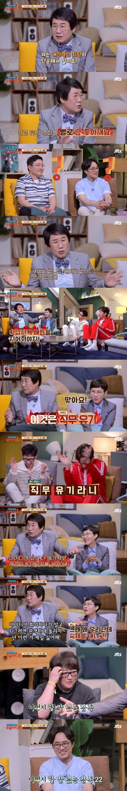

은근히 싫어하는 사람 많은 영화, 드라마 엔딩 취향.jpg
댓글
열린결말 만든 감독은 자질 없다고 봄
오메데또~
(팽이 돌아가는 콘)
난 반대로 우리나라 감독들이 열린결말에 대해 너무 욕먹어서 그런지 존나 짜치게 엔딩 내는게 더 별로임 특히 미스테리나 공포 영화는 너무 심하더라
걍 못만든거에요
난 열린결말 좋아함 근데 열린 결말을 내려면 정말 잘만들어서 생각의 여지가 많이 남게 해줘야함
곡성, 인셉션 영화 자체를 워낙 잘만들었고 뒤를 열린결말로 해놔서 사람들이 끊임 없이 생각하고 토론할 기회를 줌
이런게 영화의 가치를 더 높임
근데 생각할거리를 주는게 아니라 그냥 허무하게 열린결말로 내놓는 작품들이 문제임
인셉션이 왜 열린결말이냐.. 영화내에서 완벽하게 닫히는결말인데
디카프리오는 꿈에서 못빠져 나온거임? 현실에서 행복한거임?
디카프리오 서사가 끝나서 닫힌결말이라고 할거면 마지막 팽이가 완벽하게 쓰러져야 디카프리오가 현실에서 꿈을 이룬거지
근데 그걸 끝까지 안보여주고 끝났는데
엔딩이 아직 꿈이라면 보지도못했는데 시간이 흘러서 알수도없는 애들얼굴이 나올리도없고
팽이가 마지막에와서 위태롭게 흔들리지도 않을거임
그리고 이미 디카프리오가 팽이가 쓰러지는거 확인하기도 전에 아이들에게 간다는것부터가 더이상 꿈과현실을 혼동하지않는 자신감을 보여주는거고
전혀 혼동할일없는 완벽하게 닫힌결말
참고로 팽이는 디카프리오의 토템이아님
그러니 쓰러지건말건 현실인가아닌가는 다른걸로 확정임. 좀만 검색해보면 나옴
놀란피셜 쓰러짐
팽이토템은 부인거잖아 ㅋㅋ 주인공토템은 반지야
관객이 모호하게 느끼도록 연출한건 맞지만 그 엔딩의 팽이 말고 모든 장치들이 꿈에서 빠져나온 현실이라고 말하고있음 꽤 오래된영화라 관객들도 이제 거의 알고있고
대충 괴수들을 피해 미군을 만나 감격에 오열하는 미스트 짤
나만 이 영화가 첫 번째로 떠오른게 아니었구나 시발ㅋㅋㅋㅋㅋㅋㅋㅋㅋㅋㅋㅋㅋㅋㅋㅋㅋㅋㅋㅋㅋㅋ
미스트 마지막 장면은
"사건은 군의 개입으로 간신히 마무리 되었다. 하지만 살아남는 사람들은 끔찍했던 기억이 남긴 트라우마를 안고 살아가야 했다"
....라는
아주 완벽하고 깨끗하게 마무리된 결말을
보여주지 않냐?
열린결말이랑 전혀 상관없는
ㄴㄴ 미스트는 완벽히 닫힌결말이 맞지.
닫힌결말이지만 시청자가 열받은 결말을 말하는거지.
"알겠다"
주요 스토리는 끝내고 후속작 떡밥깔기 O
대책없이 엔딩 추측할 단서도 없는 열린결말 X
인셉션 정도 임팩트 아니면 안하는게 훨씬 좋음
열린결말 극혐이야
ㅇㅇ 나도 그렇게 생각함.
물론 작품에 따라 열린 결말이 영화를 완성하는 장치겠지만 그런 작품에 담긴 의도로서 열린결말이 아니면 확실히 마무리하는게 차라리 나음.
열린 결말보다 더 최악은 아씨발꿈 엔딩...
최악 정도가 아니라 극본 쓴 놈을 패야됨
열린 결말도 어울리는 줄거리가 있고 아닌게 있는데 명장병 걸려서 말도 안되게 끝내버리면 그게 ㅈ같음
본인이 생각하는 결말을 자신있게 그려낼 자신이없으니 관객한테 던지는거지 원래 마무리하는게 어려움
잘만들면 알빠노임
꿈엔딩이 제일 역겨움
이번에 지옥보고왔는데 닫힌결과과 열린결말이 적절히 조합되서 좋던데
나도 열린결말 존나 싫어함ㅋㅋㅋㅋ ㅈ같음
열린결말도 잘 만들면 괜찮은데 딱 봤을때 감당 안돼서 떤져버린게 느껴지면 기분 ㅈ같음
그렇게 따지면 공상 과학 영화들 죄다 ㅋㅋㅋㅋㅋ
ㅋㅋㅋㅋㅋㅋㅈㄴ웃니네
난 에필로그까지 나와서 서로 섹스하고 애기낳는거까지 보는게 좋아
그런 당신을 위해 준비해드렸습니다
'미스트'